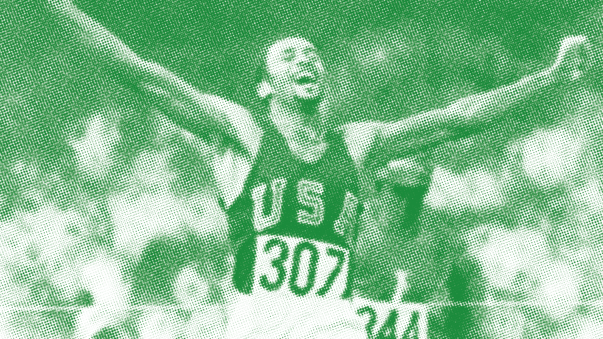
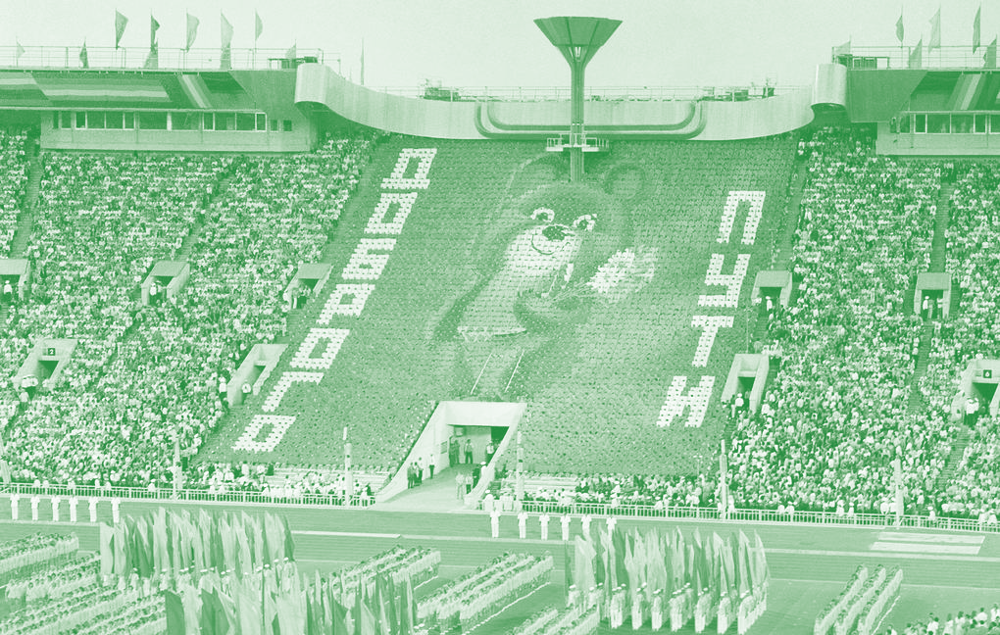
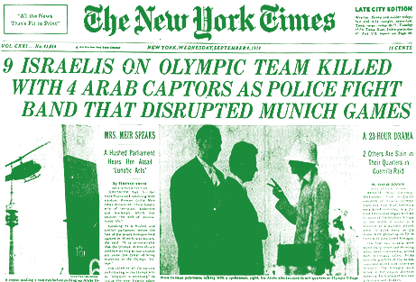

Major Milestones:
significant historical moments
involving politics


The first modern Olympic Games in 1896 had fewer than 250 athletes, all of whom were men. Over time, the Olympics grew, with more countries joining and new sports being added to the program.
In 1900, female athletes were allowed to compete for the first time, starting with sports like tennis and gold. Today, the Olympics feature thousands of athletes from around the world, competing in a wide variety of sports, including many for both men and women.
1936 Berlin
The Olympics were held in Nazi Germany, and Adolf Hitler tries to use the Games to show off his ideas of racial superiority. However, American athlete Jesse Owens, an African-American, won four gold medals, proving that talent and skill know no race.
1968 Mexico City
During the medal ceremony, two American Athletes, Tommie Smith and John Carlos, raised their fists in a Black Power salute to protest racial inequality. This moment became one of the most famous acts of protest in sports history.
1972 Munich
A tragic event occurred when a terrorist group attacked the Olympic Village took Israeli athletes hostages, resulting in the death of 11 people. This event shocked the world and changed security at the Olympics forever.
1980 Moscow & 1984 Los Angeles
These Olympic were affected by the Cold War, a time of tension between the U.S. and the Soviet Union. In 1980, the U.S. and many countries boycotted the Moscow Games, and in 1984, the Soviet Union and its allies boycotted the Los Angles Games. This made both Games smaller and more political.